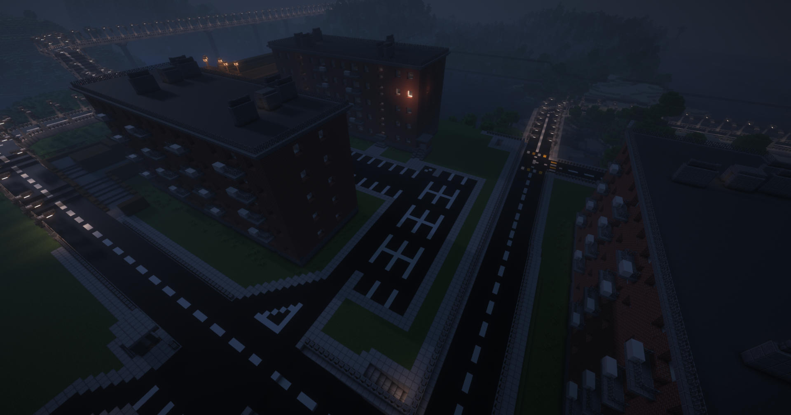
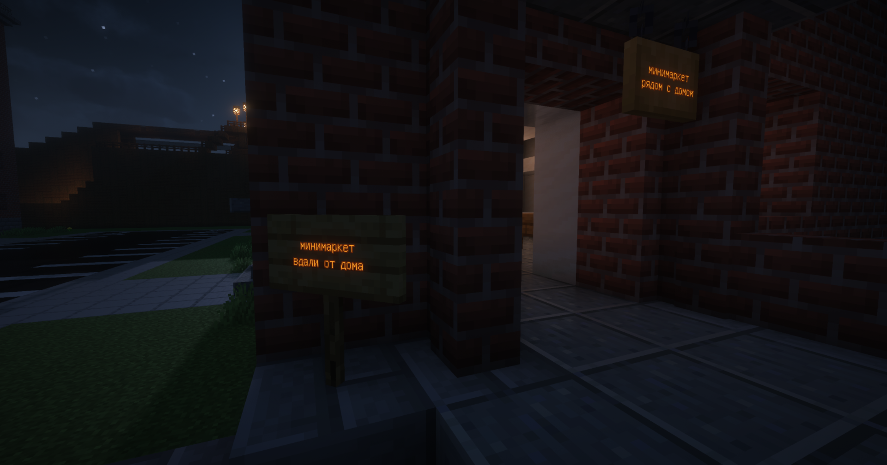
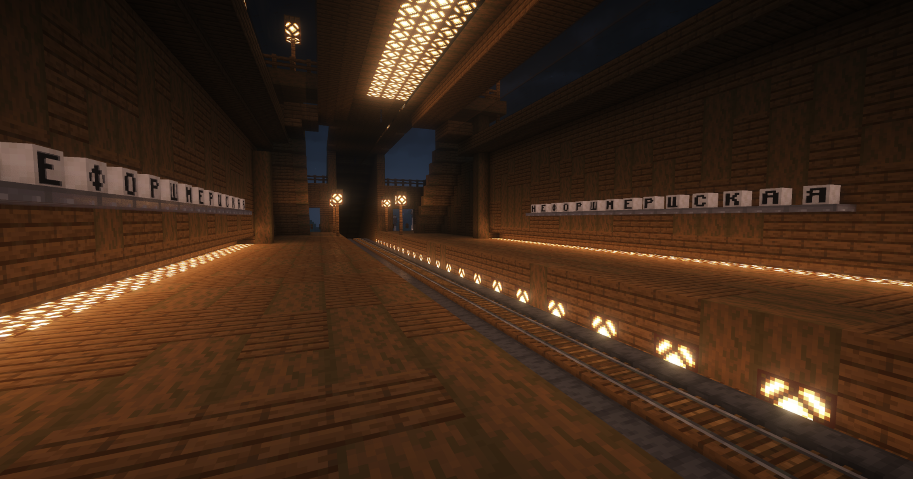
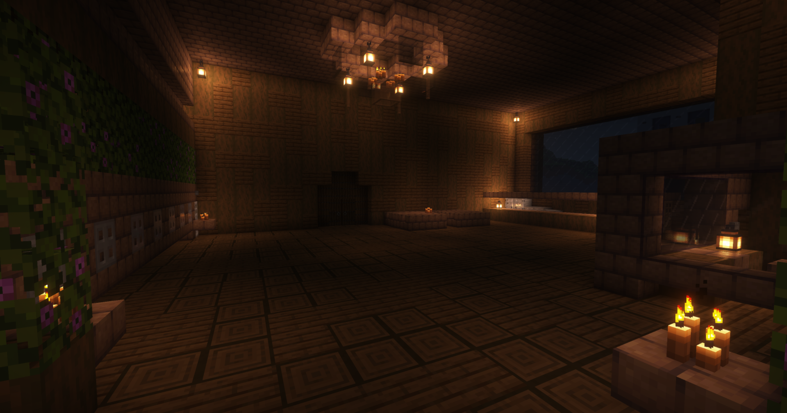
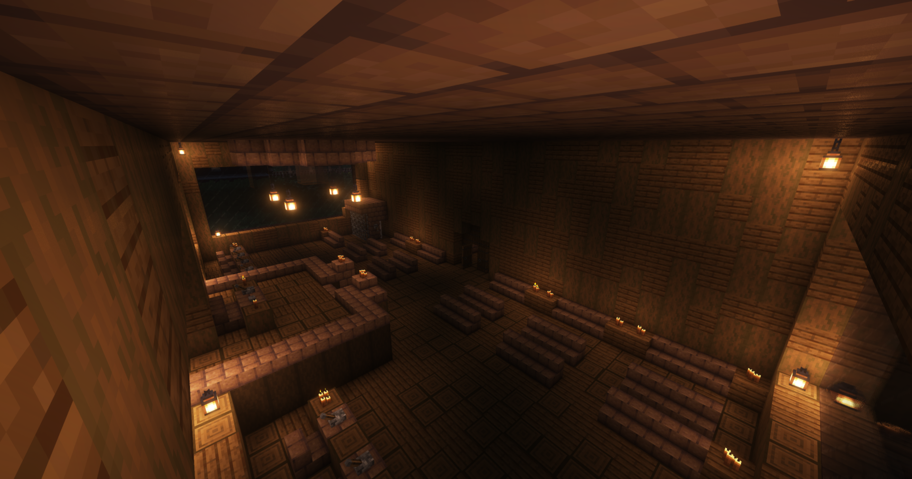

Главная
Основное
Правила
Правила
Стандартные
Если у вас ранг Нулёвый, то при получении ещё 3(!) понижения ранга, то вы будете КИКНУТЫ с сервера!
После кика, при приглашении, вам даётся роль Немощный, при следующем вылете с сервера, вам дадут бан, и вы не сможете больше вернуться!
Звучит нелогично, но в канале флуд флудить и спамить нельзя (флуд - 3 и более одинаковых сообщений, не больше 3 гифок в пол часа)!1! Награда за спам: поставим в угол за плохое поведение (мут на 30 минут), при повторном нарушении понижение ранга.
Создание бесполезных каналов строго запрещено (приватных каналов это правило не касается)!
Пример бесполезного не приватного канала: канал, который не имеет смысловую нагрузку, четких правил, адекватного названия и описания.
Создание каналов пародирующих платные приватные каналы запрещено.
Разговоры про игры можно вести в гейм-ченел, остальные разговоры в этом канале СТРОГО запрещены!
В канале оценка-скинов-игр каждый может оценить любую вещь от пятки енота до морковки!
Удаление правильно составленной оценки из канала оценка-скинов-игр карается выговором!
Примеры правильно составленных оценок 1/10, 4/10, 7/10 и т.д.
Оскорбительные ники на сервере запрещены! Наказание: двойное понижение ранга тому, кто сделал такой ник (даже если этот ник у другого человека, я узнаю кто его поменял).
Роль Вайфу нельзя получить простым способом. Её может получить только определённый человек с определённым положением в окружении Никиты.
Выпрашивать роль Вайфу запрещено! Наказание: Отправка подумать о своём поведении на срок от минуты до суток в зависимости от тяжести нарушения.
На сервере запрещено публикование фотографий лица участника, без его согласия! Наказание: от тайм-аута, до понижения ранга (зависит от количества)!
Создание любых мероприятий, которые могут отразиться на сервер, должны быть согласованы с владельцем.
Оскорбления и посылания на... в любых чатах кроме специализированных запрещены, в противном случае понижение ранга или мут!
На сервере запрещено использовать вторые, третьи и т.д. аккаунты и выдача их за других людей! (Даже в случае малейшего подозрения ваш второй и т.д. аккаунты будут забанены) можно подать иск где будет рассматриваться решения о разблокировке!
Пожертвование строго добровольное! Пожертвование можно произвести в канале донаты.
За нарушение каких либо правил и т.д. в качестве наказания вы можете получить выговор или жёсткий выговор. 2 жёстких выговора = снятие с должности минимум и бан максимум.
3 выговора = бан.
При получении ещё одного выговора срок первого выговора сбрасывается.
Чтобы избавится от выговора нужно сделать несколько благих дел для сервера либо ждать 30 дней.
Бан бустеров строго запрещён! Исключение: если человек бустанул сервер только 1 раз.
Действующий правитель, Судья, Священник и Член парламента одного типа, но священник не имеет полную неприкосновенность!
Если вы вышли с сервера специально/случайно, а потом вернулись, то никто роли восстанавливать вам не собирается! Вернём только плохие роли))))
Запрещается необоснованное оскорбление игр, и оскорбление чувств игроков, играющих в какие-либо игры, мнение должно подтверждаться фактами или теориями.
Пример неправильного написания: скрап механик хуйня, потому что я так сказал.
Пример правильного написания: я думаю что скрап механик говно, потому что там нету летающих единорогов срущих радугой.
Список всех возможных наказаний на сервере:
Тяжёлые: Баны: Бан навсегда, бан на срок.
Тюремные наказания: Пожизненное лишение свободы, лишение свободы на срок.
Средние: Понижение ранга, снятие с должности (если она у вас есть), мут на неделю.
Лёгкие: Мут до 1 дня, временное понижение ранга.
Также возможно индивидуальное наказание, например лишение права участвовать в каком-либо событии/голосовании.
Если после захода на сервер вы написали одно сообщение, но неактивили 3 дня, вам выдадут роль Пассивный участник.
То же самое касается людей с ролью Активный участник.
Если после неактивности вы удосужитесь что-нибудь написать, вы получите роль Пассивный участник, а если продолжите активничать более 10-ти дней вы получите роль Активный участник.
Если вы не напишете ни одного сообщения после получения роли Неактивный участник в течение 14-и дней, вы будете кикнуты с сервера.
Организация бунтов против власти строго запрещено! Наказание: отправка в замечательный санаторий колония-строгого-режима на срок до 2-х недель.
Флуд бесполезной информацией будет караться тайм-аутом.
Нарушение правил сервера и последующее попадание в суд может караться тюрьмой!
Если вы попали в тюрьму, то вам доступны только правила, объявления и чат нарушителей закона! Остальные каналы вам недоступны, так что будьте готовы к этому!
Запрещено использовать карты уно.
Нельзя работать более чем на 2-х работах.
Нельзя работать сразу в 2-х компаниях!
Плагиат запрещен
Реклама любых пабликов и сторонних вещей строго запрещена! Наказание: повестка в санаторий.
Негласные
Нику, во что бы это не стало, не оскорблять. Иначе расстрел, потом бан. (девушка никиты (глава сервера))
Женщинам тут не место, единственная женщина - Ника Евгеньевна Ю. (девушка никиты (глава сервера))
Если собираетесь по серьёзному спорить с Никитой, будьте готовы к тому что во всех спорах в которых участвует Никита, участвует Ника. (девушка никиты (глава сервера))
Если вы дотер, будьте готовы к жёсткому хейту и оскорблениям, даже если вы играли в неё меньше часа. Тут все за кс.
Маму не оскорблять.
Читы - бан, кемперство - бан, оскорбление - бан, оскорбление администрации - расстрел, потом бан.
Лицам младше 14 лет лучше не заходить.
В #беспредел на самом деле нельзя писать всё что хочешь. Например нельзя писать что-то плохое про Нику (девушка никиты (глава сервера))
Большое количество правил может не распространятся на влиятельных людей, таких как например Никита или Ника (девушка никиты (глава сервера))
Некоторые мелкие правила можно нарушить безнаказанно, так как либо никто не увидит ваши нарушения, либо наказывать вас - невыгодно.
    